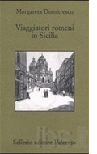

 În cartea Viaggiatori romeni in Sicilia (Călători români în Sicilia), apărută în anul 2003 la Palermo, Margareta Dumitrescu, profesor de limba și literatura română la Facultatea de Litere și Filosofie din Catania, descrie în cele 200 de pagini impresiile călătorilor români pe insulă. Dacă la mijlocul secolului al XVIII-lea Sicilia era destinația preferată a bolnavilor de plămâni datorită climei calde, evident, mai bună decât în sudul Franței, începând cu anul 1860 au fost semnalați voluntari români simpatizanți ai revoluționarului Garibaldi. Nicolae Bălcescu este cel mai cunoscut român din Sicilia, în Palermo existând chiar și un bulevard ce-i poartă numele. Palermo a mai fost vizitat de Vasile Alecsandri care o însoțea pe iubita sa bolnavă de tifos, Elena Negri, în ploioasa iarnă a anului 1847, de deputatul liberal G. Brătianu în 1871, de preotul și folcloristul Alexiu Viciu în 1903, de pictorul Nicolae Tonitza pe când era student, în anul 1903, de Lucian Blaga în anul 1911, de Dumitru Dan și Paul Pârvu în călătoria din jurul lumii din 1913, de istoricul Vasile Pârvan în februarie-martie 1914, de omul politic Take Ionescu în 1922, de scriitorul Camil Petrescu în 1932, de scriitorul Constantin Kirițescu în 1938, de filosoful Ion Petrovici în același an, Mircea Elide, în 1951, vizitează Catania, Siracuza și Palermo, Emil Cioran în 1963, pictorul Tristan Tzara, fondatorul dadaismului, în 1961, Eugen Barbu în aprilie 1972, iar după anii '90, poeta Ana Blandiana, italienista Viorica Bălteanu, Octavian Paler și Alexandru Paleologu.
În plin comunism, un bucovinean a predat limba română 20 de ani la Palermo
Petru Iroaie s-a născut lângă Suceava, în comuna Fântânele, în anul 1907. A studiat la Cernauți, fiind laureat în 1933. A fost asociat al Academiei Române din Roma, efectuând cercetări dialectologice ale vechiului grup român din Istria, publicând prima colecție de cânturi populare în 1936. La Universitatea din Roma urmează cursurile lui Giulio Bertoni, V. Rossi, Pettazzoni, Gentile, Toschi. În 1936 își ia doctoratul la Cernăuți în limba și literatura română. A fost asistent la Universitatea din Cernăuți, apoi la București (1940-1941) și Iași (1941-1942).
A fost numit lector la Universitatea din Palermo în 1942, iar din 1945-46 devine profesor de limba și literatura română. În anul 1955 devine cetățean italian. Din anul 1956 devine membru al “Societas Academica Dacoromana di Roma”. Din 1958 este abilitat la “libera docenza” în Italia.
Opere: La centenarul Al. Odobescu (1834-1934), Suceava, 1934; Cântece populare istroromâne (Cernăuți, 1936); Caracterul poeziei populare (Cernăuți, 1937); Critica criticii românești (Cernăuți, 1937); Espressione epistolare contadinesca (Firenze, 1937); Poezia autentic populară (Iași, 1938); Ionel Teodoreanu (Cernăuți, 1939); Sensul folcloric în poezia lui Eminescu (Cernăuți, 1940); Il canto popolare istroromeno(în “Ephemeris Dacoromana”, Roma, 1940); Energie și vitalitate românească (București, 1941); Omenie românească (1941); Natură și sens popular românesc (Iași, 1942); Vita e poesia popolare romena (1943); Delavrancea (1944); Balcescu, precursore del socialismo romeno (Palermo, 1946); Tudor Arghezi, il poeta ‘dalle sette fronti” (Palermo, 1946);Sulla questione della poesia popolare(Napoli, 1949); “Miorița” o Il canto della fusione con la natura (Napoli, 1958); Per un profilo di Nicola Balcescu (Trapani, 1959); Dante nella letteratura romena (1965 și 1966); Conversazioni critiche (Palermo-Roma, 1967); Umanesimo romeno (Trapani, 1967).
Culegeri: Așa cântați Cântece populare istroromâne – Canti popolari istroromeni (Susnevița-Jeiăn, 1936); Grai și băsmuire cirebiră (Iași, 1940); Alte cântece populare istroromâne (Iași, 1940).
Petru Iroaie a predat limba și literatura română la Universitatea din Palermo, timp de 20 de ani, în perioada 1950-1970, mulți absolvenți de litere din acea perioadă amintindu-și de profesorul român cu emoție.
Renata Pappa, profesor de franceză, își amintește astfel de Petru Iroaie: “Era puțin trist, melancolic, dar era fascinant când povestea despre scriitorii români. Nu am făcut decât un an limba și literatura română, dar îmi amintesc perfect de Eminescu, de poezia Mai am un singur dor, precum și de proverbele românești atât de asemănătoare cu proverbele siciliene”.
În 1957, la inițiativa Monseniorului Octavian Bârlea și a unor intelectuali români din exil – filologi, istorici, filozofi, teologi și artiști – a luat ființă la Roma Societatea Academică Română, printre membrii fondatori numărându-se și Petru Iroaie, alături de D.C. Amzăr, Titus Bărbulescu, N.A. Gheorghiu, N.I. Herescu, Eugen Lozovan, Paul Miron, Flaviu Popan, Mircea Popescu, Vasile Posteucă, Ghe. Rahoveanu, Grigore Nandris, Sever Pop, etc., cu patru secții: Istorie, președinte Scarlat Lambrino; Filologie, președinte Dumitru Găzdaru; Filosofie și Teologie, președinte Mircea Eliade; Literatură și Artă, președinte Basil Munteanu. Aceștia au fost sprijiniți de Cardinalul Eugène Tisserand, membru al Academiei Franceze.
Principalele publicații ale SAR-ului au fost: Acta Philosophica et Theologica (din 1958); Acta Philologica (din 1958); Acta Historica (din 1959); Acta Scientiarium Socialium (din 1959) și, mai ales, Revista Scriitorilor Români (din 1962), editată ani de-a rândul de regretatul Dr. Constantin Sporea. Monseniorul Dr. Octavian Bârlea rămâne președinte al SAR până în anul 1969.
Profesorul universitar doctor Gheorghe Carageani, un apropiat al familiei Iroaie, ne-a mărturisit: “L-am cunoscut la Roma pe profesorul Petru Iroaie, dar în perioada în care era deja bolnav. Am avut însă mult mai des contacte cu soția sa, Anna Iroaie, și cu cei doi copii: Dan și Ileana. Am câteva extrase cu articole ale profesorului Iroaie și cred că mai am și un curriculum dactilografiat, întocmit de dânsul în vederea unui concurs. După decesul profesorul Iroaie (1984), soția sa mi-a încredințat mie biblioteca dânsului pe care am dus-o la Università degli Studi della Basilicata (Potenza), pentru că am predat la Facultatea de Litere și Filosofie a acestei universități între anii 1986 și 1991, în calitate de professore ordinario“.
Francesca di Miceli, profesoară de albaneză și română la Universitatea din Palermo, a continuat activitatea dascălului ei, Petru Iroaie, dar nu pentru multă vreme: “Din păcate, interesul studenților pentru cursul de limba și literatura română a scăzut foarte mult, în anul universitar 2005 având doar o studentă, care a plecat cu o bursă Erasmus în România. S-ar putea închide catedra, dedicându-mă cursului de albaneză. Poate dacă ar veni un profesor de limba română s-ar schimba situația, așa cum este la Padova, unde sunt peste 25 de studenți care studiază limba română”.
Liviu Bordaș, care a activat în calitate de cercetător științific la Accademia di Romania din Roma în perioada 2005-2006, ne spunea: “Eliade și Iroaie au fost împreună atât în SAR cât și în colegiul mai multor reviste românești din exil, nu neapărat legionare, dar categoric anticomuniste, deci de dreapta”.
Referitor la materialele care ar putea fi încă studiate, i-am solicitat doamnei Lucia Papahagi, bibliotecar la Accademia di Romania din Roma, o listă cu operele lui Petru Iroaie, în anul 2005: “Din păcate, biblioteca noastră nu are un catalog, iar căutările se fac greu. Suntem în faza informatizării datelor. Când vom termina această activitate, biblioteca va deveni foarte funcțională, dar până atunci... Așadar, am găsit în revista “Ephemeris Dacoromana,” nr. IX, 1940, articolul Il canto popolare istroromeno, pag. 243-349. La sfârșitul acestui articol există o mică bibliografie. Din păcate noi nu avem nimic. Vi le indic, totuși, pentru că s-ar putea să le găsiți la Biblioteca Nazionale din Roma sau la Biblioteca Alessandrina unde se află fondul Claudiu Isopescu, un fond foarte mare al acestui cărturar care a studiat la Roma: Iroaie, Petru – Cântece populare istroromâne, Cernăuți, 1936; Iroaie, Petru – Espressione epistolare contadinesca (Estratto dall'Archivum Romanicum, XXI, Firenze, 1937; Iroaie, Petru – Caracterul poeziei populare (Estratto dall'Omagiu lui I. Nistor), Cernăuți, 1937; Iroaie, Petru, Poezia autentic populară, Iași, 1938”.
În prezent, la Biblioteca Accademiei di Romania, la Roma, lucrurile s-au îmbunătățit, aceasta fiind informatizată și cuprinzând 33.230 de cărți, reviste, periodice, care pot fi consultate și studiate. În ultimii ani, biblioteca a primit mai multe donații foarte importante din partea lui Dinu Adameșteanu, Mariano Baffi, Luisa Valmarin și din fondul Băncii Naționale a României.
Profesorul Petru Iroaie s-a stins din viață la Palermo, în 1984. Cred că cel mai frumos lucru pe care l-a avut din Italia este minunata sa soție, Anna Siciliano, siciliană get beget care vorbește perfect românește la cei peste 80 de ani purtați bine, amintindu-și cu mare plăcere vizitele în România de dinainte de cel de-al doilea război, vizitând orașele Iași, Suceava, Cernăuți, București, însoțindu-l pe soțul ei. “Era foarte frumos, oamenii foarte primitori, ospitalieri. Mai este așa? Da, citeam mult împreună cu soțul meu, ne plimbam, studiam. Era minunat în România!”
Crina Suceveanu
April 1, 2012
© 2012 Orizonturi culturale italo-române | Orizzonti Culturali Italo-Romeni